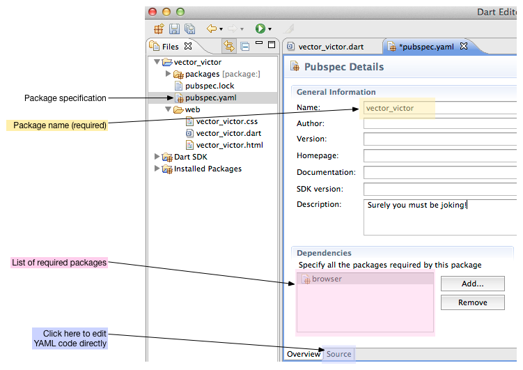
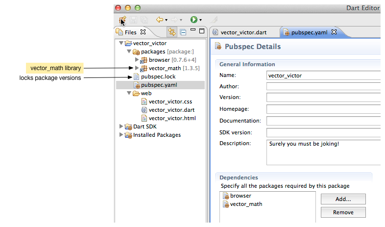

Install Shared Packages
Borrow and share code.
Now that you’re able to create and run a Dart application and have a basic understanding of DOM programming, you are ready to leverage code written by other programmers. Many interesting and useful packages of reusable Dart code are available at the pub.dartlang.org repository.
This tutorial shows you how to use pub—a package manager
that comes with Dart—to
install one of the packages in the repository,
the vector_math package.
You can follow these same steps to install any package hosted at
pub.dartlang.org;
just change the package name when you get to that step.
This tutorial also describes some of the resources you can expect to find
in a well-built package.
- About the pubspec.yaml file
- Name the package dependencies
- Install the package dependencies
- What did you get (and not get)?
- Import libraries from a package
- Other resources
- What next?
About the pubspec.yaml file
To use an external package,
your application must itself be a package.
Any application with a valid pubspec.yaml file in its top-level directory
is a package and can therefore use external packages.
When you create an application using Dart Editor,
Dart Editor automatically creates a pubspec.yaml file.
Start Dart Editor and create a new application with the name vector_victor.
Double click pubspec.yaml to view its contents.

The pubspec.yaml file contains the package specification written in YAML (visit Pubspec Format for in-depth coverage). Dart Editor provides a user interface for editing the pubspec.yaml file so that you don’t have to worry about the YAML format. Or you can click the Source tab at the bottom of the Editor pane to edit the YAML code directly. Below is the pubspec.yaml file that was created for the vector_victor application.

The package name is required. You’ll note that the pubspec.yaml file already lists a dependency on the browser package. Web applications that don’t use polymer.dart need the browser package.
Name the package dependencies
To use an external library package, you need to add the package to your application’s list of dependencies in the pubspec.yaml file. Each item in the dependencies list specifies the name, and sometimes the version, of a package that your application uses.
Let’s make the vector_victor application have a dependency on the vector_math package, which is available at pub.dartlang.org.
- Click the Add button in Dart Editor.

- Enter the name of the package in the popup window.
Dart Editor adds the package name to the list.

Notice the Version field.
any means that this application can use
any version of the vector_math package.
You could instead specify a particular version of the package.
When versioning becomes important to your project,
check out
Pub’s Versioning Philosophy
.
Here’s the new pubspec.yaml file:

pub.dartlang.org
is the primary public repository for Dart packages.
pub automatically checks that
website when resolving package dependencies.
To use one of the packages from that site,
you can specify it by its simple name,
as we have done here.
Install the package dependencies
In Dart Editor, save pubspec.yaml with File > Save. When you save the file, Dart Editor automatically runs pub get, which recursively installs the Dart libraries from the packages in the dependencies list. You can also select Pub Install from the Tools menu in Dart Editor.
Pub puts the libraries in a directory called packages under the application’s top-level directory. Click the wee arrow to expand the packages directory. There you will find the vector_math directory, which links to the Dart libraries from the vector_math package.

Pub install works recursively; if the included package has dependencies, those packages are installed as well.
Pub install creates a file called pubspec.lock,
which identifies the specific versions of the packages that were installed.
This helps to provide a stable development environment.
Later you can modify the version constraints and use pub update
to update to new versions as needed.
What did you get (and not get)?
Besides the Dart libraries, the vector_math package has other resources that might be useful to you that do not get installed into your application directory. Let’s take a step back for a moment to look at what you got and where it came from.
To see the contents of the vector_math package,
visit the
Dart vector math repository
at github.
Although many files and directories are in the repository,
only one, lib, was installed when you ran pub get.


Import libraries from a package
Open the vector_math directory by clicking the little arrow.

The directory contains a Dart file called vector_math.dart,
which you import into your Dart application,
and a src directory,
which contains the source code for the library.
As with the SDK libraries,
use the import directive to use code from an installed library.
The Dart SDK libraries are built-in and
are identified with the special dart: prefix.
For external libraries installed by pub,
use the package: prefix.
import 'package:vector_math/vector_math.dart';
Note that you specify the filename, not the library name.
Other resources
- Dart developers share packages at pub.dartlang.org. Look there for packages that might be useful to you, or share your own Dart packages. See the pub documentation to get started using and sharing packages.
What next?
One package at pub.dartlang.org is polymer.dart, which makes writing web applications easier with data binding, templates, and declarative event handlers. Check out the next tutorial, Define a Custom Element, for an introduction to polymer.dart.